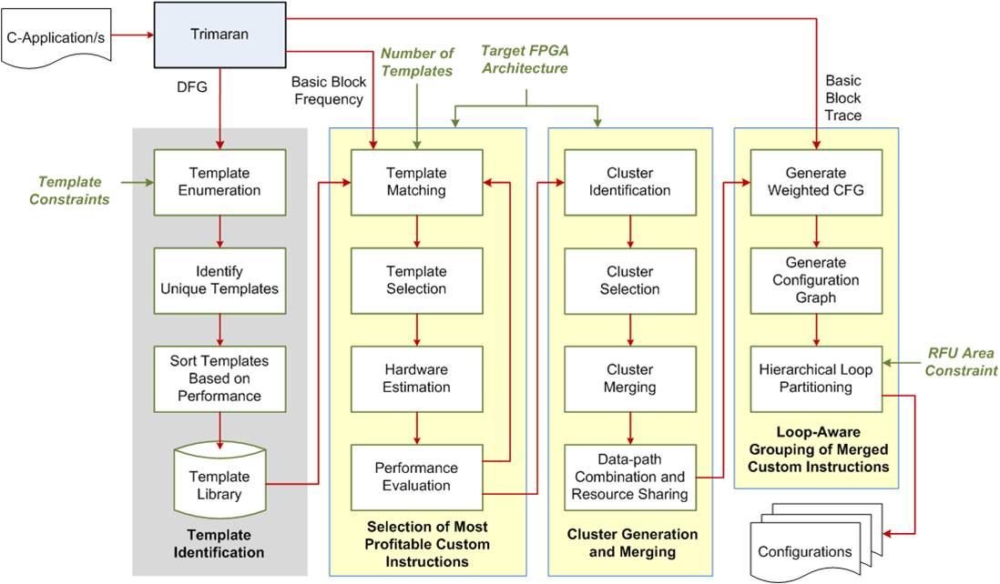

Our Projects


Motivation
Future embedded systems will require a higher degree of customization to manage the growing complexity of the applications. At the same time, they must continue to facilitate a high degree of flexibility to meet the shrinking Time-to-Market (TTM) window. There exists an urgent need to develop techniques that focus on increasing the design productivity of highly customized embedded systems, in order to improve product life cycles, and reduce TTM pressure and Non-Recurring Engineering (NRE) costs.
Computing platforms such as Reconfigurable Instruction Set Processors (RISPs) provide a promising solution to realize a balanced trade-off between flexibility and customization.
Research Objective
The main aim of this research work is to develop novel techniques and design methodologies for automatically generating efficient custom instructions that are capable of optimizing the utilization of RISPs. In particular, the proposed methods must incorporate architecture-aware strategies to generate area-time efficient custom instructions without the need to undergo time consuming hardware design iterations.
ARCTIC Framework
The Architecture AwaRe CusTom InstruCtions (ARCTIC) framework incorporates a number of novel techniques to realize area-time efficient custom instructions on RISPs. ARCTIC incorporates the following:
- Graph covering strategy for rapid selection of custom instructions.
- Cluster generation technique to estimate critical path delays and area utilization of custom instructions on Look-Up Table (LUT) based FPGAs.
- Design exploration framework that can rapidly identify a reduced set of profitable custom instructions without the need for actual hardware synthesis.
- Novel cluster merging strategy that takes into account the architectural constraints of the FPGA device in order to realize custom instructions with low area-delay product.
- Hierarchical loop partitioning strategy that reduces the complexity of the search space for determining the runtime custom instruction configurations in area constrained RISPs.
- Scheme for managing the runtime reconfiguration of custom instructions on a partially reconfigurable architecture.

Publications
International Refereed Journals
- Siew-Kei Lam, Christopher T. Clarke, and Thambipillai Srikanthan, “Exploiting FPGA-Aware Merging of Custom Instructions for Runtime Reconfiguration”, ACM Transactions on Reconfigurable Technology and Systems, Vol. 7, No. 3, Article 26, November 2014 [PDF]
- Siew-Kei Lam, Thambipillai Srikanthan and Christopher T. Clarke, “Rapid Evaluation of Custom Instruction Selection Approaches with FPGA Estimation”, ACM Transactions on Embedded Computing Systems, Vol. 13, No. 4, Article 75, August 2014 [PDF]
- Alok Prakash, Siew-Kei Lam, Christopher T. Clarke, Thambipillai Srikanthan, “FPGA-Aware Techniques for Rapid Generation of Profitable Custom Instructions”, Microprocessors and Microsystems, Vol. 37, No. 3, May 2013, pp 259–269
- Siew-Kei Lam, Thambipillai Srikanthan and Cristopher T. Clarke, “Architecture-Aware Technique for Mapping Area-Time Efficient Custom Instructions onto FPGAs", IEEE Transactions on Computers, Vol. 60, No. 5, May 2011, pp. 680-692 [PDF]
- Tao Li, Wu Jigang, Siew-Kei Lam, Thambipillai Srikanthan and Xicheng Lu, “Selecting Profitable Custom Instructions for Reconfigurable Processors", Journal of Systems Architecture (Special Issue on HW/SW Co-Design: Tools and Applications), Vol. 56, No. 8, August 2010, pp. 340-351 [PDF]
- Siew-Kei Lam, Thambipillai Srikanthan T and Christopher T. Clarke, “Selecting Profitable Custom Instructions for Area-Time-Efficient Realization on Reconfigurable Architectures", IEEE Transactions on Industrial Electronics, Vol. 56, No. 10, October 2009, pp. 3998-4005 [PDF]
- Siew-Kei Lam and Thambipillai Srikanthan, “Rapid Design of Area-Efficient Custom Instructions for Reconfigurable Embedded Processing", Journal of Systems Architecture, Vol. 55, No. 1, January 2009, pp. 1-14 [PDF]
- Siew-Kei Lam, Thambipillai Srikanthan and Christopher T. Clarke, “Rapid Generation of Custom Instructions Using Predefined Dataflow Structures", Microprocessors and Microsystems (Special Issue on FPGA-based Reconfigurable Computing), Vol. 30, No. 6, September 2006, pp. 355-366 [PDF]
International Refereed Conferences/Workshops
- Deshya Wijesundera, Alok Prakash, Siew Kei Lam, and Thambipillai Srikanthan, “Exploiting Configuration Dependencies for Rapid Area-efficient Customization of Soft-core Processors”, 19th International Workshop on Software and Compilers for Embedded Systems (SCOPES), May 2016, pp. 163-172
- Alok Prakash, Christopher T. Clarke, Siew-Kei Lam and Thambipillai Srikanthan, “Modelling the Communication Overhead of Using Local Memory Blocks”, 24th IEEE International Conference on Application-specific Systems, Architectures and Processors (ASAP), June 2013, pp. 31-34
- Siew-Kei Lam, Thambipillai Srikanthan and Christopher T. Clarke, "Exploiting FPGA-Aware Merging of Custom Instructions for Runtime Reconfiguration", 7th International Workshop on Reconfigurable Communication-centric Systems-on-Chip, July 2012 [PDF]
- Alok Prakash, Siew-Kei Lam, Christopher T. Clarke and Thambipillai Srikanthan, "Instruction Set Customization for Area-Constrained FPGA Designs", IEEE International SoC Conference (SOCC), September 2011
- Siew-Kei Lam, Deng Y., Hu J., Zhou X. and Srikanthan T., “Hierarchical Loop Partitioning for Rapid Generation of Runtime Configurations”, Lecture Notes in Computer Science (LNCS), Springer-Verlag, Berlin Heidelberg: Reconfigurable Computing: Architectures, Tools and Applications, Vol. 5992/2010, 2010, pp. 282-293 [PDF]
- Prakash A., Siew-Kei Lam, Singh A.K. and Srikanthan T., “Architecture-Aware Custom Instruction Generation for Reconfigurable Processors”, Lecture Notes in Computer Science (LNCS), Springer-Verlag, Berlin Heidelberg: Reconfigurable Computing: Architectures, Tools and Applications, Vol. 5992/2010, 2010, pp. 414-419
- Siew-Kei Lam, Bharathi N. Krishnan and Thambipillai Srikanthan, “Efficient Management of Custom Instructions for Run-Time Reconfigurable Instruction Set Processors", IEEE International Conference on Field-Programmable Technology (ICFPT), December 2006
- Siew-Kei Lam, Deng Yun and Thambipillai Srikanthan, “Morphable Structures for Reconfigurable Instruction Set Processors", Lecture Notes in Computer Science (LNCS), Springer-Verlag, Berlin Heidelberg: Advances in Computer Systems Architecture, Vol. 3740, pp. 450-463 (Tenth Asia-Pacific Computer Systems Architecture Conference (ACSAC), October 2005 [PDF]